Digital Museum of Professional Websites
| home | about the collection | the collection | submit a site | exhibition | countries | live | plugs | photos & video | minecraft | acknowledgments | site map | links | about the collector |
Fifteen types, A to O, and every country that uses each one. This is the collection the museum was modelled on: another museum of plugs and sockets, kept elsewhere on the internet for a very long time.
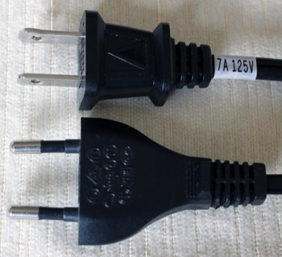 FF-UK · CC BY-SA 4.0 | Type A — NEMA 1-15 55 countries Two flat blades, no earth. The oldest type still in everyday use. North America, Japan American Samoa, Anguilla, Antigua and Barbuda, Aruba, Bahamas, Bangladesh, Barbados, Belize, Bermuda, Bolivia, British Virgin Islands, Cambodia, Canada, Cayman Islands, China, Colombia, Costa Rica, Cuba, Curaçao, Dominican Republic, Ecuador, El Salvador, French Polynesia, Guam and 31 more |
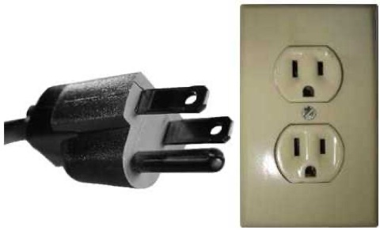 Conrad H. McGregor · Public domain | Type B — NEMA 5-15 52 countries Type A with a round earth pin added below the blades. North America, Japan American Samoa, Anguilla, Antigua and Barbuda, Aruba, Bahamas, Barbados, Belize, Bermuda, Bolivia, British Virgin Islands, Canada, Cayman Islands, Colombia, Costa Rica, Cuba, Curaçao, Dominican Republic, Ecuador, El Salvador, French Polynesia, Guam, Guatemala, Guyana, Haiti and 28 more |
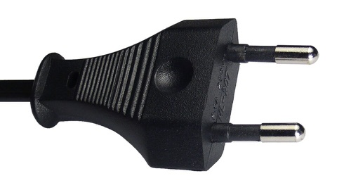 SomnusDe · Public domain | Type C — CEE 7/16 Europlug 131 countries Two round pins, 4.8 mm, unearthed. Fits almost any Continental socket. Europe, most of the world Afghanistan, Albania, Algeria, Andorra, Angola, Argentina, Armenia, Austria, Azerbaijan, Bangladesh, Belarus, Benin, Bhutan, Bolivia, Bosnia and Herzegovina, Brazil, Bulgaria, Burkina Faso, Burundi, Cambodia, Cameroon, Cape Verde, Central African Republic, Chad and 107 more |
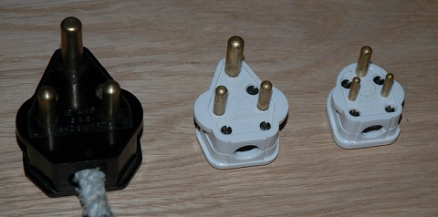 Ziltro at English Wikipedia · Public domain | Type D — BS 546, 5 A 31 countries Three round pins in a triangle, the earth pin much larger. India, Sri Lanka, Nepal Bangladesh, Bhutan, Botswana, Chad, Dominica, Ghana, Guyana, Hong Kong, India, Iraq, Jordan, Lebanon, Macau, Maldives, Myanmar, Namibia, Nepal, Niger, Nigeria, Pakistan, Qatar, Saint Kitts and Nevis, Senegal, Sierra Leone and 7 more |
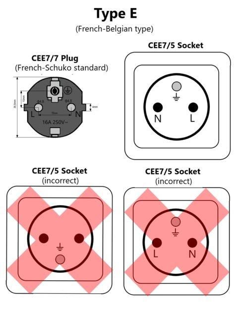 Electro-world-standard · CC BY-SA 4.0 | Type E — CEE 7/5 42 countries Round pins with an earth pin projecting from the socket. France, Belgium, Poland Benin, Burkina Faso, Burundi, Cameroon, Central African Republic, Chad, Comoros, Denmark, Djibouti, Equatorial Guinea, Ethiopia, Faroe Islands, France, French Guiana, French Polynesia, Gabon, Greenland, Guadeloupe, Guinea-Bissau, Laos, Madagascar, Mali, Martinique, Mauritania and 18 more |
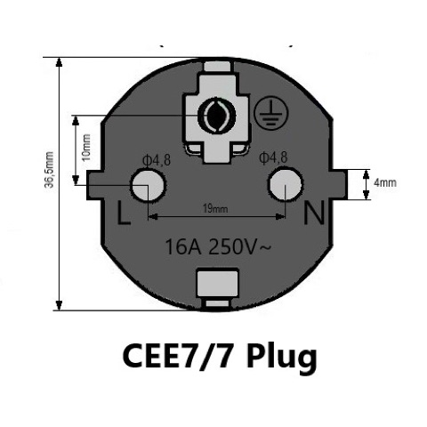 Electro-world-standard · CC BY-SA 4.0 | Type F — CEE 7/4 Schuko 80 countries Side earthing clips instead of a pin. Fits C and E plugs. Germany, most of Europe Afghanistan, Albania, Algeria, Andorra, Angola, Armenia, Aruba, Austria, Azerbaijan, Belarus, Bhutan, Bosnia and Herzegovina, Bulgaria, Cape Verde, Chad, Chile, Croatia, Curaçao, Denmark, Egypt, Estonia, Ethiopia, Faroe Islands, Finland and 56 more |
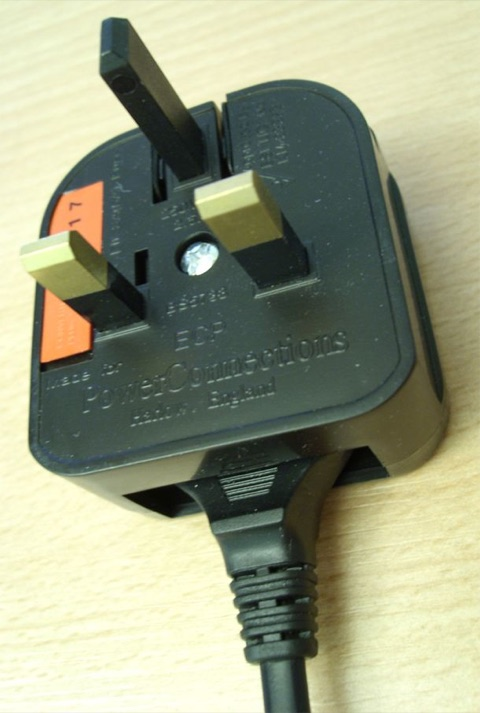 User:C.Löser (de:Benutzer:C.Löser) · CC BY-SA 2.0 de | Type G — BS 1363 55 countries Three rectangular pins, a fuse inside the plug, shutters in the socket. United Kingdom, Ireland, Malta Bahrain, Bangladesh, Belize, Bhutan, Botswana, Brunei, Cambodia, Cyprus, Dominica, Falkland Islands, Gambia, Ghana, Gibraltar, Grenada, Guernsey, Guyana, Hong Kong, Iraq, Ireland, Isle of Man, Jersey, Jordan, Kenya, Kuwait and 31 more |
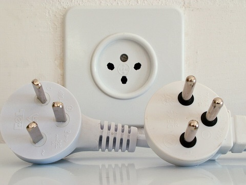 fr:Utilisateur:Kiddo · Public domain | Type H — SI 32 2 countries Three flat pins in a Y shape, unique to Israel. Israel, Gaza, West Bank Israel, Palestine |
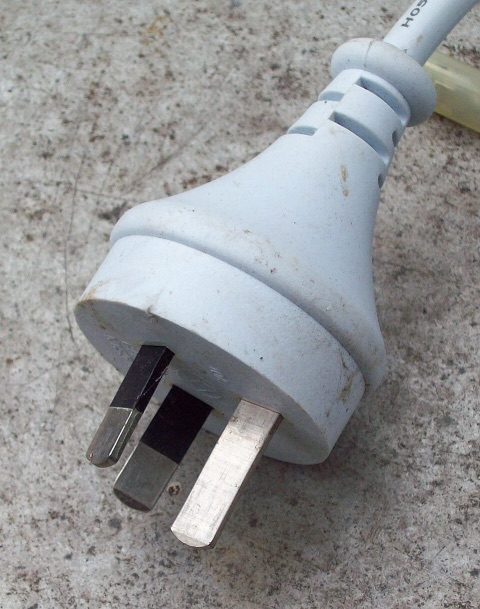 Jim Donovan · Public domain | Type I — AS/NZS 3112 21 countries Two angled flat pins with a vertical earth pin. Australia, New Zealand, China, Argentina American Samoa, Argentina, Australia, China, Cook Islands, Fiji, Kiribati, Myanmar, Nauru, New Zealand, Niue, Papua New Guinea, Pitcairn Islands, Samoa, Solomon Islands, Tajikistan, Timor-Leste, Tonga, Tuvalu, Uruguay, Vanuatu |
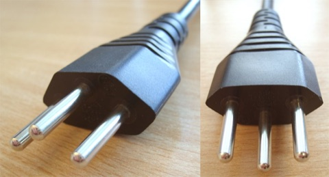 C.Löser (C.Löser) · CC BY-SA 2.0 de | Type J — SEV 1011 4 countries Three round pins set close together, offset from centre. Switzerland, Liechtenstein Jordan, Liechtenstein, Maldives, Switzerland |
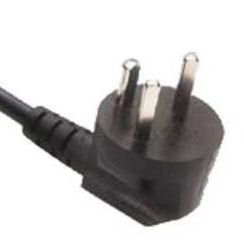 Original: Chameleon · CC BY-SA 4.0 | Type K — DS 60884-2-D1 6 countries Like a Schuko but the earth pin is a pin, not a clip. Denmark, Greenland Denmark, Faroe Islands, Greenland, Guinea, Maldives, Senegal |
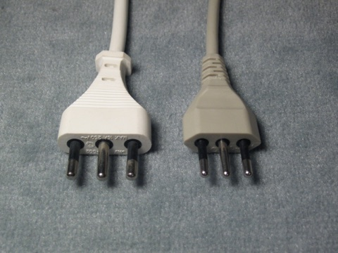 Marco Gilardetti · CC BY-SA 3.0 | Type L — CEI 23-50 11 countries Three round pins in a straight line, two sizes of spacing. Italy, Chile, Uruguay Chile, Cuba, Eritrea, Ethiopia, Italy, Libya, Maldives, Qatar, San Marino, Syria, Uruguay |
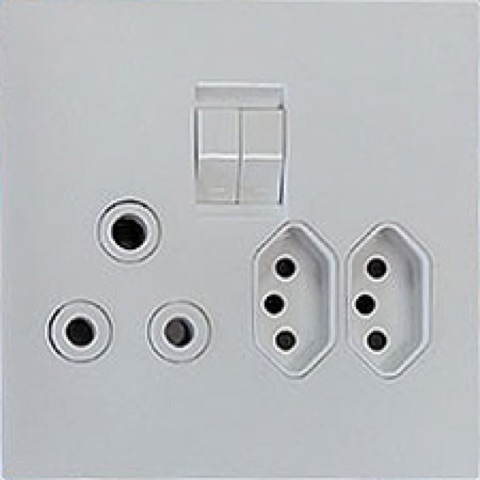 FF-UK · CC BY-SA 4.0 | Type M — BS 546, 15 A 16 countries The large version of type D, rated for 15 amperes. South Africa, India, Malaysia Bhutan, Botswana, Eswatini, Hong Kong, India, Lesotho, Macau, Malaysia, Mozambique, Namibia, Nepal, Pakistan, Singapore, South Africa, Sri Lanka, United Kingdom |
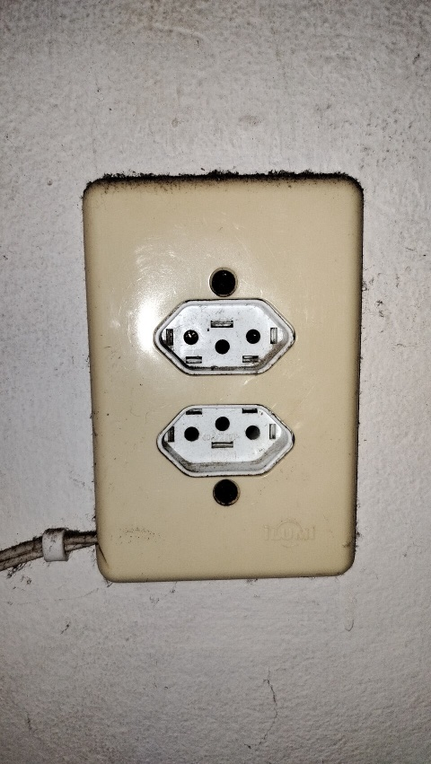 Cosmic Console · CC0 | Type N — IEC 60906-1 / NBR 14136 3 countries Three round pins with the earth pin slightly offset. Brazil, South Africa Brazil, Paraguay, South Africa |
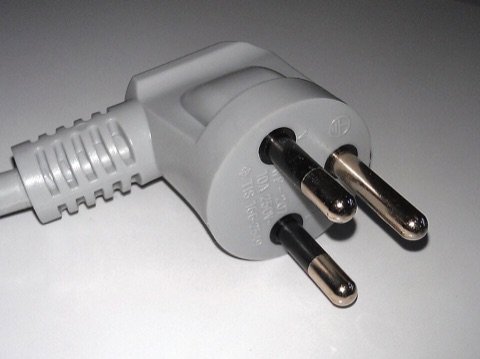 Paul_012 · CC BY-SA 3.0 | Type O — TIS 166-2549 1 countries A hybrid of A and C pins in one round body. Thailand Thailand |
| home | about the collection | the collection | submit a site | exhibition | countries | live | plugs | photos & video | acknowledgments | site map | links | about the collector |
© 2009-2025 Digital Museum of Professional Websites · mail@shit.pub · m.shit.pub